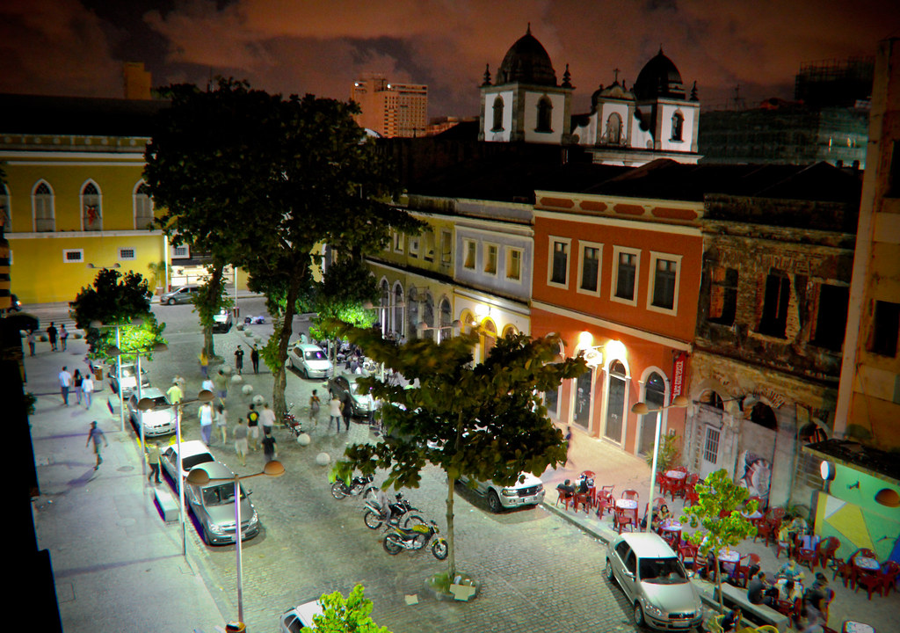

Descubra a Rua da Moeda
Antro da boemia do Recife Antigo, a Rua da Moeda tem séculos de existência e guarda um pouco da história das movimentações financeiras de Pernambuco. Em meados do século 17, a via se chamava Rua Maria Roiz (ou Maria Rodrigues).